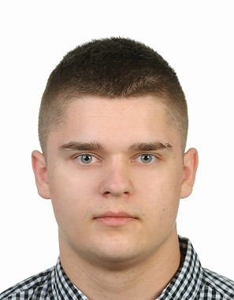

Młody kreatywny dobrze rokujący programista

Urodziłem się w 1998 roku. Zabawom zawsze był dla mnie jazda na rowerze oraz granie w piłkę. Ale poza tym jak każde inne dziecko lubiłem tworzyć. Na swoim konie miałem kilka konstrukcji domków na drzewie, baz w lesie czy innych schronów do zabawy. Był też po drodze jakiś pojazd z desek zbudowany wspólnie z kolegami pod domem. Pasa do tworzenia pozostała. Do dziś staram się coś stworzyć w garażowym zaciszu.
Po ukończeniu gimnazjum poszedłem do technikum mechatronicznego, które ukończyłem bez żadnego problemu wraz z maturą oraz trzema egzaminami zawodowymi (E.03 E.18 E.19) w między czasie również zrobiłem uprawnienia SEP do 1kV oraz uprawnienia UDT do obsługi wózków widłowych.
Jeszcze w technikum podczas lekcji zawodowych przygotowując się do egzaminu zawodowego E.19 – Projektowanie i programowanie urządzeń i systemów mechatronicznych. Sporo czasu spędziłem nad programowaniem obiektowym makiet urządzeń. Co prawda już wcześniej interesowałem się sferą IT, działaniem komputerów itd., ale to właśnie po ukończeniu technikum zacząłem się uczyć programowania.
Zacząłem od popularnego arduino. Napisałem kilka projektów, czegoś się nauczyłem. Ale z braku czasu nie szło to tak jak chciałem.
W końcu przyszedł czas, w którym jestem teraz, czyli studia. Jestem obecnie studentem Politechniki Wrocławskiej, na wydziale Elektroniki, Fotoniki i Mikrosystemów studiów stacjonarnych, na kierunku elektronika i telekomunikacja. Swoją przyszłość kieruje w stronę IT, dlatego rozwijam się w tym kierunku. Na studiach robiłem kilka zadań na zaliczenie w jeżykach C, C++, Python. Nie ukrywam, że jak na razie najwięcej pracowałem z językiem C++. Kilka mniejszych projektów na studiach oraz własnych.
Teraz chce poszerzyć swoją wiedzę i zapoznać się bardziej z HTML, CSS oraz JavaScript…